Calmora Psychological Services
Lead capture, booking, reminders, and follow-up for a clinic.
The problem
Clinics like Calmora tend to lose prospects before the first consultation. Four issues drove this project:
- Manual admin. Consult booking had no structured system behind it.
- No reminders, which leads to no-shows and cancellations.
- Stigma. People hesitate to reach out about mental health, so a hard “Book now” ask loses them.
- No continuity of care. Returning clients had no way to book a follow-up with the doctor already handling their case, so every booking started from a generic calendar.
The GoHighLevel account was a fresh build, with no existing pipelines, tags or workflows.
Walkthrough
A 4-minute video tour of the funnel, from landing page to booked consultation, including the returning-client follow-up booking.
The solution
I designed a low-pressure entry point for the primary persona, Maria, the “Overwhelmed Professional.” Instead of asking for a booking up front, the funnel offers a free, confidential 5-minute screening assessment. Results arrive by email with a free Grounding practices PDF, and a booking path is offered at every step.
Returning clients get their own path: they identify themselves with their email and phone number and can only book with the doctor handling their case, so every follow-up stays personal.
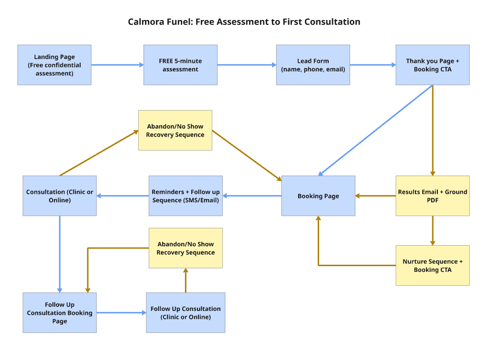
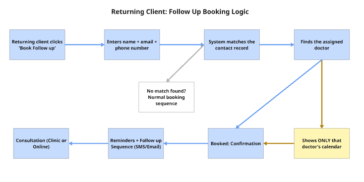
What I built
1. Landing page and funnel pages
A GHL preview site covering the homepage, landing page, assessment, lead form, thank-you page and booking page. The thank-you page includes a booking section with clinic and online tabs and a returning-client option.
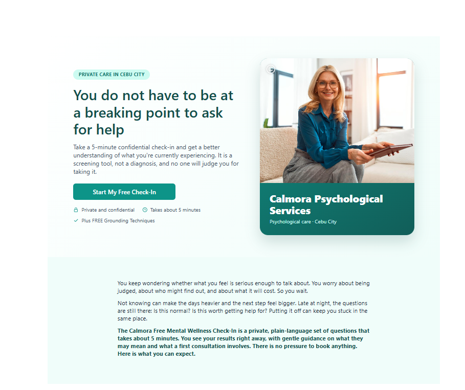
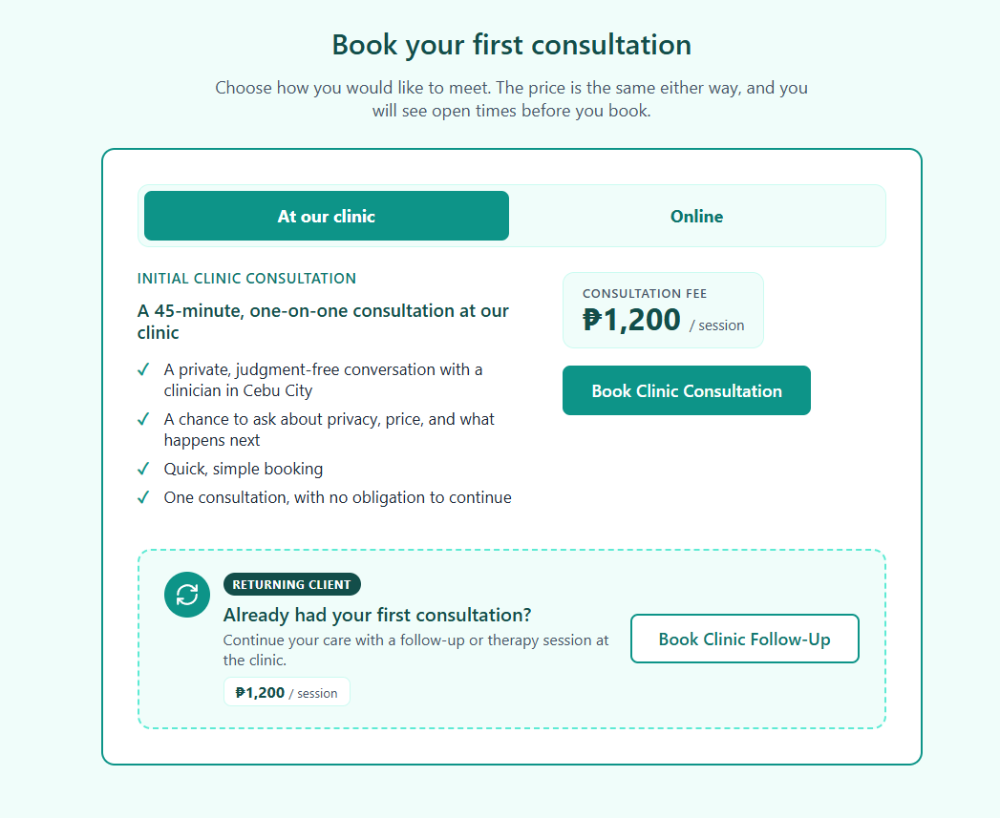
2. Pipeline
A sales pipeline that tracks every lead from first assessment through to a started client, including a recovery stage for no-shows.
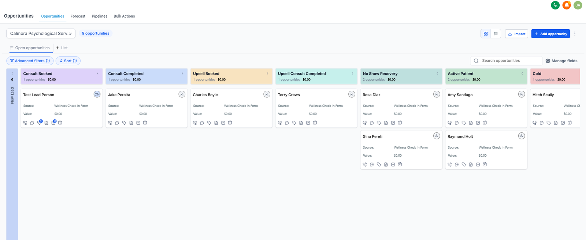
3. Automation workflows
Trigger-and-action workflows for results delivery and the nurture sequence, and for abandoned-booking recovery
(1 hour, 24 hours, 72 hours).
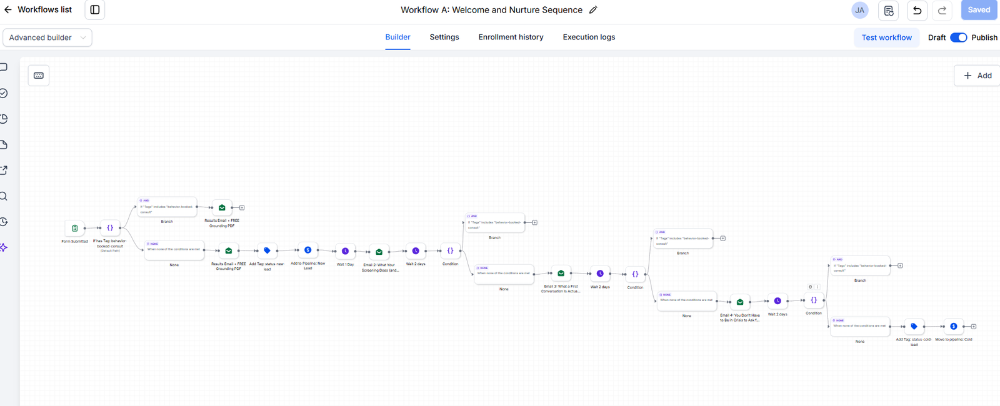
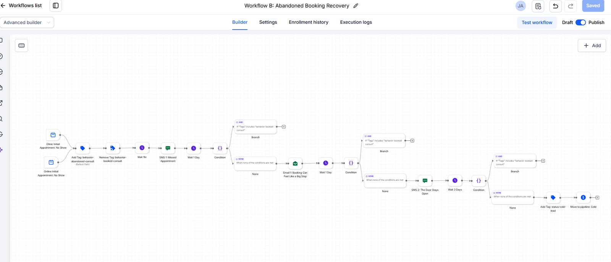
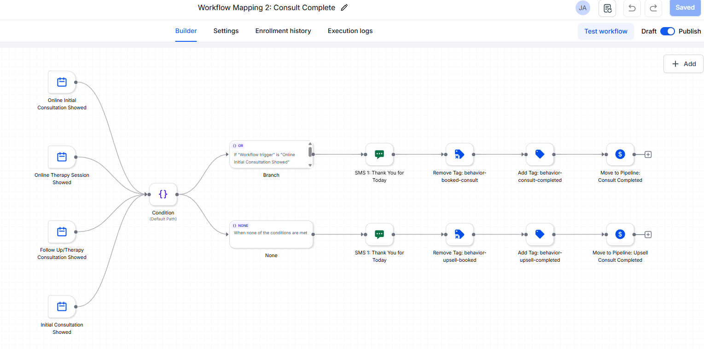
4. Email and SMS sequences
A results email with the Grounding PDF, a nurture sequence, and reminder messages written in the clinic’s own voice, with no individual clinician named as the sender.
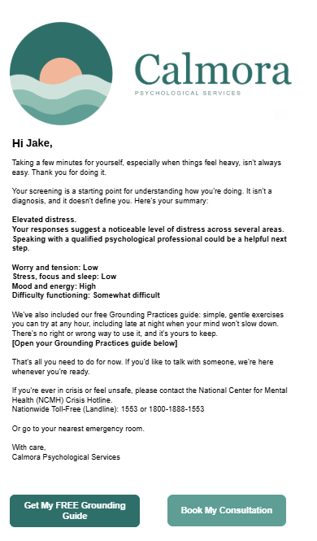
5. Follow-up booking with the assigned doctor
Returning clients can book a follow-up session without calling the clinic. They confirm their identity with their email and phone number, and the booking page shows only the availability of the doctor handling their case. This keeps follow-ups personal and prevents bookings with the wrong doctor.
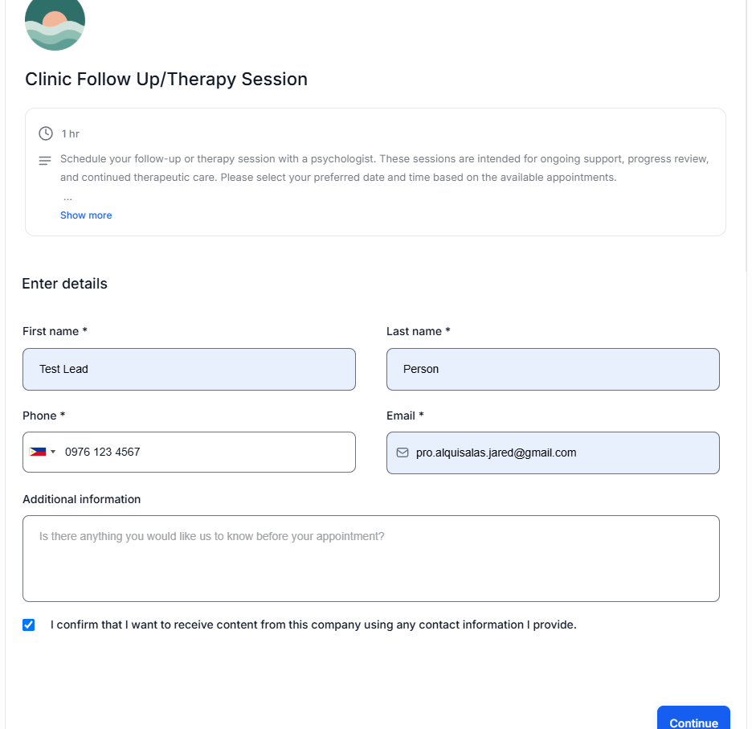
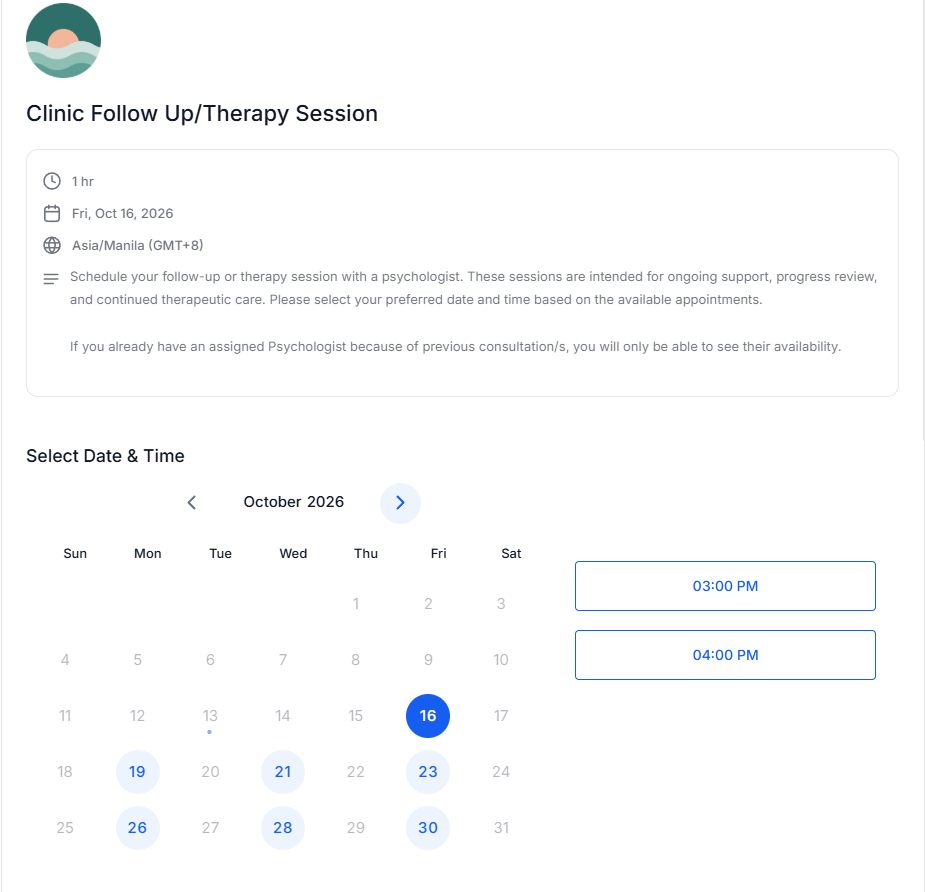
Designed targets
Honesty note: These are projections from my campaign model, not results from a live clinic.
| Metric | Baseline | Target |
|---|---|---|
| Monthly inquiries | 120 | 140 |
| Inquiry to consult booking | 45% | 52% |
| Consult show-up rate | 72% | 80% |
| Consult to treatment | 60% | 63% |
| New clients per month | 23 | about 37 |
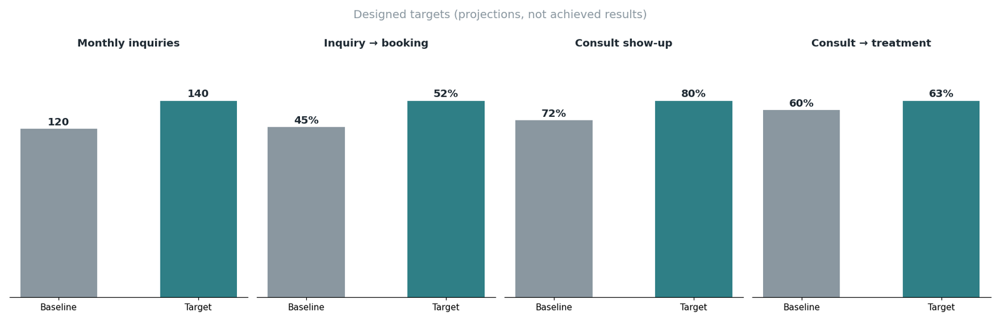
My decisions and why
- Free confidential assessment as the lead magnet: it lowers the stigma barrier and gives a natural reason to follow up.
- Booking CTA on the thank-you page: it catches people while their intent is highest. The clinic/online tabs give each visitor a clear path.
- Structured reminder sequences: show-up rate is one of the biggest levers in the model, so I targeted no-shows directly.
- Sender is the clinic name only: it stays professional and does not depend on one clinician.
- Follow-ups route to the client’s own doctor: continuity of care is central to therapy, and a generic calendar invites wrong-doctor bookings and admin back-and-forth.